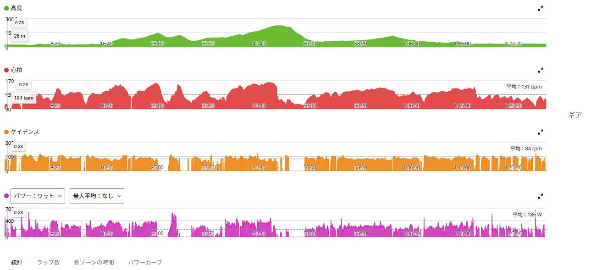
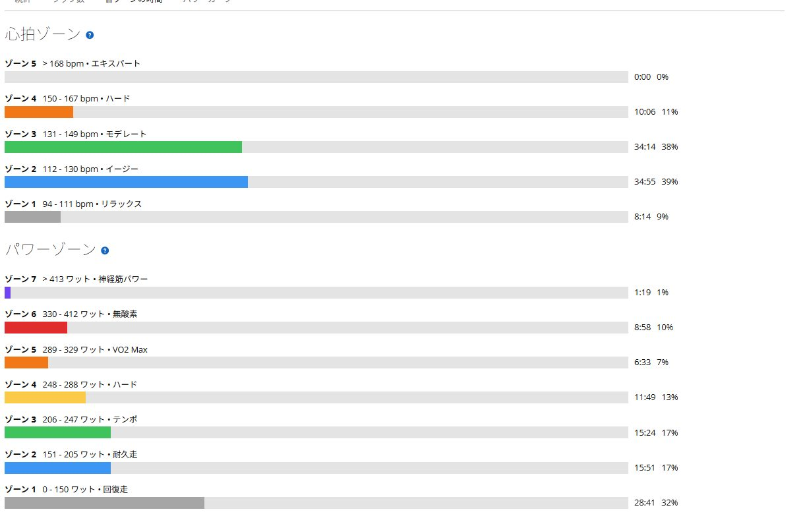

2日休んだら身体が軽い。ラストSSTは5分でやめてもTSS114
2日間、自転車の練習を休んだ。前日は家族でプールへ行き、それだけで思った以上に疲れたので、帰宅後も無理に何かを足さずに終了。軽く買い物へ出た程度で、ほぼ休養日にした。
その結果なのか、今日は走り出しから身体が軽かった。脚は動き、呼吸も苦しくない。暑さも以前ほど圧迫感がなく、高強度を何本か入れてもまだ余裕があった。ただし最後に思いつきで始めたSSTは約5分でやめた。身体ではなく気持ちが先に終わった。

2日休んだら身体が軽かった
今日の好調をすべて2日休んだ効果と決めることはできない。暑い環境で走る日が続き、身体が少し慣れてきた可能性もある。フォーム、風、当日の気分でも走りやすさは変わる。
それでも休養がうまく働いた感覚はあった。休んだ後に脚が鈍るどころか、むしろ反応が良い。練習をしなかった2日間も、次に踏むための時間だったと考えると納得しやすい。
短い高強度を重ねても余裕があった
主な区間は342Wで2分、339Wで2分、465Wで約1分、304Wで7分半。最後に258Wで約4分走った。304Wは75kg換算で約4.1W/kgになる。ひとつの長い登りを一定で走った日ではないが、高い出力へ何度か上げても脚は反応していた。
全体では40.84km、1時間29分、獲得標高474m。平均186W、NP242W、TSS114だった。数字だけ見れば十分に高負荷であり、最後の1本を短く終えたからといって練習全体が失敗になる内容ではない。

最後のSSTは約5分でやめた
帰り道で「余裕があるならSSTも入れておこう」と始めた。ところが4分を過ぎたあたりで、身体より先に気持ちが切れた。限界ではない。続けようと思えば踏めたが、今日はもう十分ではないかという声が強くなり、そのまま終了した。
走り出してから追加したメニューは役割が曖昧になりやすい。余裕があればやる、疲れたらやめるでは、終盤に気持ちだけで判断することになる。最後に持続走を入れるなら、出発前に時間と目的を決めておく方がよさそうだ。
休養は練習を止めた時間ではなかった
休むと弱くなるような気がして、元気なら少しでも乗りたくなる。ただ今日の感覚を見ると、疲労を抜いてからしっかり踏む方が高い出力を出せる日もある。当たり前の話だが、自分の脚で確認すると受け入れやすい。
もちろん毎回2日休めば強くなるわけではない。今回は家族で出かけた疲れもあり、結果として休養が必要なタイミングだった。今後も日数だけで決めず、身体の重さと練習の質を見ながら休みを入れる。
今回やってみて思ったこと
今日は最後のSSTを完遂できなかった日ではなく、2日休んだ身体で高強度を何本も入れ、TSS114まで積んだ日だった。終盤の4分だけを見れば物足りないが、全体を見れば十分に走っている。
次に同じような構成で走るなら、最後の持続走を「余裕があれば追加」にはしない。たとえば帰路で10分だけ一定にすると先に決める。身体が動く日に、気分任せでメニューを曖昧にしないことも練習の一部らしい。
自分用メモ
- 全体40.84km / 1時間29分 / 474mアップ
- 負荷平均186W / NP242W / IF0.880 / TSS114
- 主な区間342W・2分 / 339W・2分 / 304W・7分半
- 心拍平均131bpm / 最大165bpm
- 気温平均29.3℃ / 最高33℃
- 今回の判断ラストSSTは約5分で終了。全体負荷は十分